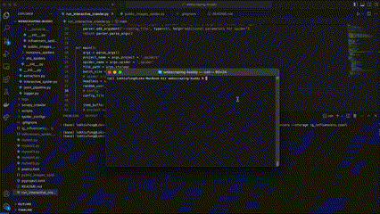
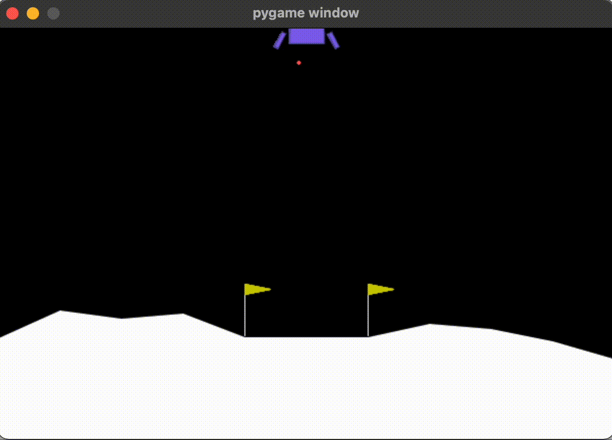

Why the World Can Look Simple From Far Away
A beginner-friendly journey through scaling laws, universality, and why neat patterns in biology, markets, AI, and prime numbers do not predict every detail.
Read moreQuantitative Developer · Trading Systems Engineer
I work across quantitative research, AI product development, and live trading infrastructure—turning ideas into testable systems, then making the path from research to deployment repeatable.
Alchemist is a high-performance, distributed automated trading system designed to seamlessly transition quantitative research into fully automated algorithmic trading strategies.
A data pipeline for quantitative trading research. It includes data collection, data cleaning and data storage.

Web scrapers for instagram, XHS and investor contacts. Get a list of potential influencers and investors for FREE.

Implementation of deep reinforcement learning algorithms for solving OpenAI's gym environments.
A beginner-friendly journey through scaling laws, universality, and why neat patterns in biology, markets, AI, and prime numbers do not predict every detail.
Read moreDeconstructing the technique and emotion behind Chopin's "Revolutionary" Etude with interactive sheet music.
Read moreAn interactive exploration of Furstenberg's beautiful topological proof of the infinitude of primes.
Read moreExplore the elegance of number theory and its critical role in modern cryptography through Fermat's Little Theorem.
Read moreIn 2018, I started a journey into the world of cryptocurrency trading and software development with minimal experience. Alongside a knowledgeable friend, I learned new concepts in trading, cryptocurrency, and software development.
Read moreWhat could be the most important field of research in artificial intelligence? Natural language understanding may be the one. Advances in natural language understanding can potentially boost up the productivity and knowledge acquisition for humans.
Read on MediumWe know that there are 2 learning systems. But why do we need 2 separate learning systems? In this article, we will explain the role of the hippocampus to the slow integration of new experiences through replay.
Read on MediumMemory is the data or information retrieved when an intelligent agent needs it. The ability to retrieve and store memory is one of the features of intelligent agents. With the theory of Complementary Learning Systems (CLS), an intelligent agent implements 2 learning systems.
Read on MediumArtificial neural network (deep learning may be a fancier name!) is probably the most popular machine learning model now. You can always hear the words "deep learning" from everywhere. This is a biologically inspired model and it is good to understand this model with some biology!
Read on MediumFeel free to reach out to me via email:
lokhiufung123@gmail.com